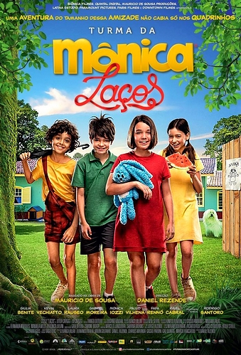

Início |
Comédia |
Terror |
Ação |
Aventura |
Drama |
Romance |
Ficção Científica
© BRUNA LUIZA PAIXÃO 1ºINFO_TURMA A
Alguns filmes de Aventura Brasileiros
O Auto da CompadecidaAs aventuras de João Grilo e Chicó, dois nordestinos pobres que vivem de golpes para sobreviver. Eles estão sempre enganando o povo de um pequeno vilarejo, inclusive o temido cangaceiro Severino de Aracaju, que os persegue pela região. | Turma da Mônica: LaçosO Floquinho desaparece. Para encontrar seu cachorro de estimação, Cebolinha conta com os amigos Cascão, Mônica e Magali e, claro, um plano infalível. |
Tainá - Uma Aventura na Amazônia
Tainá vive na Amazônia com o avô. Ela é perseguida por defender a floresta dos caçadores e precisa se mudar para uma vila. Lá, ela conhece Joninho, um menino da cidade grande. Juntos, a dupla aprende a lidar com os valores da cidade e da floresta. |